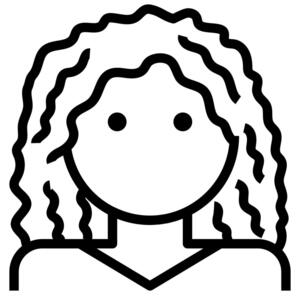

ⲕⲁⲣⲟⲩⲥ SB nn (adj), curled (?) of hair: AM 136 B ⲟⲩⲙⲏⲣϣⲡⲉ ⲛⲁⲫⲉ ⲛⲕ. = PO 17 637 اشقر اجعد الشعر (but K 206 B ⲡⲓⲕ. اشقر), C 43 196 B hair ⲟⲓ ⲙⲙⲏⲣϣ ⲛⲕ., Mor 44 27 S of Christ's varying appearance, hair ⲟⲗⲙ ⲉϥⲕⲏⲙ opp ⲉϥⲟ ⲛⲕ., Mor 42 21 = 43 21 S sim ⲟⲩⲥⲟⲡ ⲛⲕ. ⲟⲩⲥⲟⲡ ⲉⲣⲉⲡⲉϥϥⲱ ϣⲟⲓ, BSG 187 S = Wess 15 145 S ⲟⲩⲣⲱⲙⲉ ⲛⲟⲩⲱⲃϣ ⲛⲕ.As name: ⲡⲕⲁⲣⲟⲩⲥ BM 1240 S, Πκαροῦς (Preisigke).
(noun)
curled ? of hair

1: curled (of hair)
complete
117b
See also:
| view | ⲙⲉⲣⲣⲉ B | (noun masculine) red of hair1096 |